Development
We developed "Through The Fog" using the Unity game engine. We then exported it to HTML5 to be played in a web browser. The game was developed by a team of 7 students at the University of California, Santa Cruz. The game was developed over the course of 10 weeks as part of a capstone game development class.
Our game was designed under the following externally imposed constraints:
Accessibility:
- Our game is fully controllable and completable with the use of a single hand, and should be equally enjoyable!
- Colorblind users have also been considered throughout development, and our game has been thurougly tested in various greyscale modes.
- Players also will enjoy our low-stakes built in rests. This means you can feel free to walk away from the game at any time, and pick up where you last left off!
Localization:
- Currently, our game supports: US English, Japanese.
- Translations are stored in a Unity Localization file.
- Translates all menus, character dialouge, controls, and all other essential assets.
Game Format:
- Our game was developed in Unity 2022.3.10f1.
- It is exported to HTML5 and is playable in a web browser.
- The game is playable on Windows, Mac, Linux.
- The game also fits nicely under 100MB, to keep things light!
LOFI Mockup
Design Questions:
- What kind of controls would a one handed player feel comfortable with and what do those actions do in the game?
- How do we allow the player to feel lost without limiting movement?
- How does the level design and camera positioning assist in the player having trouble navigating
- How would a player move from one scene to another seamlessly?
- What different locations are there in the game and how are they connected?
Knowledge Gained:
- A one handed player will have access to the WASD character controls as well as E for the interact, these keys are close enough to each other that most if not all players will be able to control at all points.
- We learned some of the new quirks with the Unity Player Controller, these quirks left us to deal with orienting the movement to line up with the camera while we rotated.
- While creating the map we learned about the importance of deadends and converging paths, these deadends create a way for the player to get lost in the level.
- We also had to learn about how to adjust the map quite a few times so the player could be naturally lost instead of the map tricking you with moving, this design we have now allows the player to naturally get lost.
- We realized that we needed a more dynamic control scheme based off of the camera angle instead of just X and Y coordinates because different perspectives would change the control scheme unintentionally.
HIFI Prototype
Design Questions:
- How can we enhance the game feel by improving assets and adding functionality?
- What can make the game more engaging and fun?
- Is our game accessible?
- What can we do to connect the different systems in our game, especially UI to game world.
Knowledge Gained:
- Adding meaningful transitions between our windows and the game world allows the player to feel more connected. We also found these transitions were the perfect place to give extra information and tips to the player.
- Adding a shop to the game world also gave the player a reason to keep exploring the and playing. Adding these upgrades was crucial, especially when we began considering the game's scalability.
- Minigames were also a big addition to our gameplay loop, and served many purposes. They were a way to break up the monotony of the game, and also a way to connect the player to the world. They buildings were directly connected to the minigames, and the buildings were connected to the map.
- Playtesting was crucial to our development, and we found that the game was not always accessible to all players. We needed to adjust UIs and asset colors to make the game more visible to colorblind players, and continously tesed with limited mobility was crucial as well.
Polish
Character Development
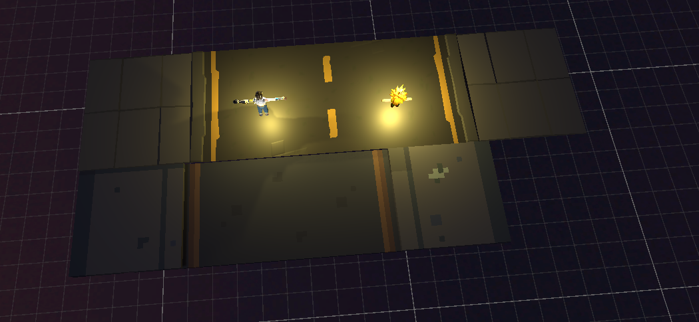
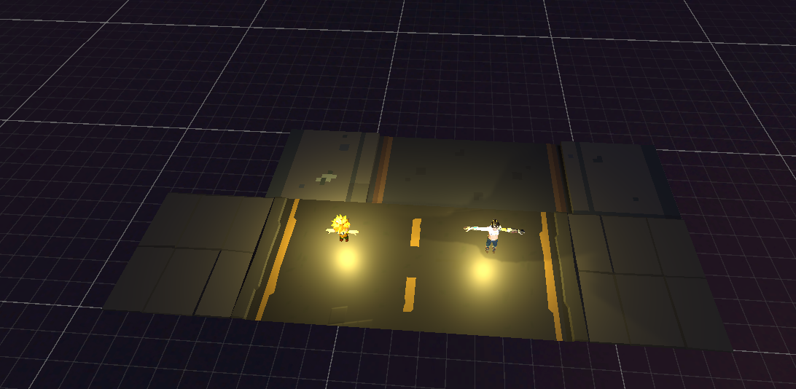
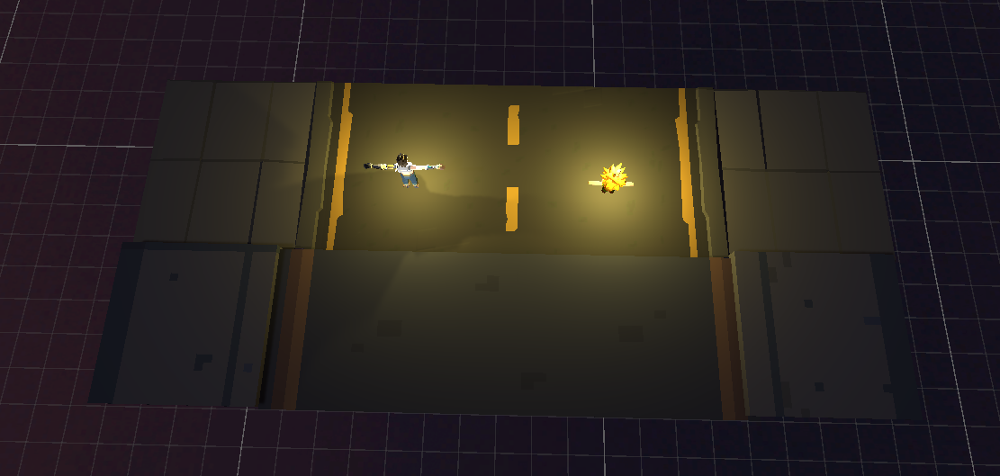
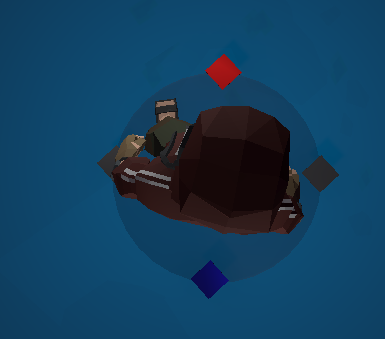
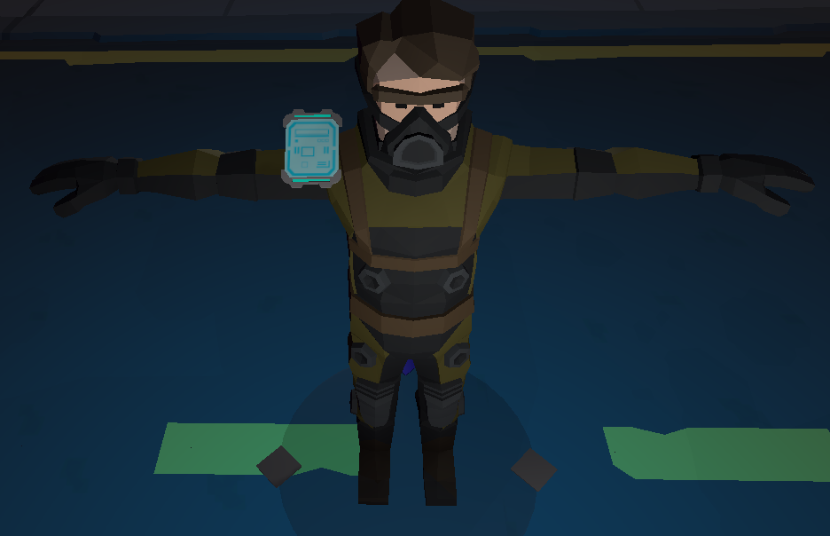
Minigame Development
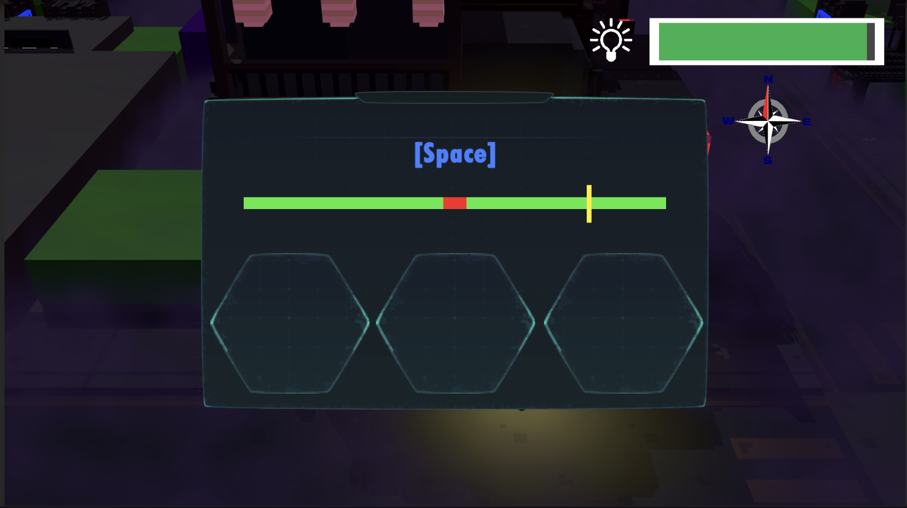
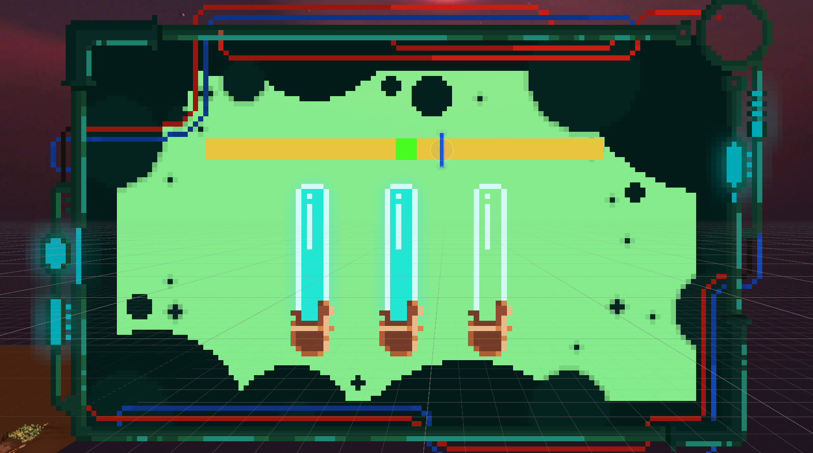
Map Development
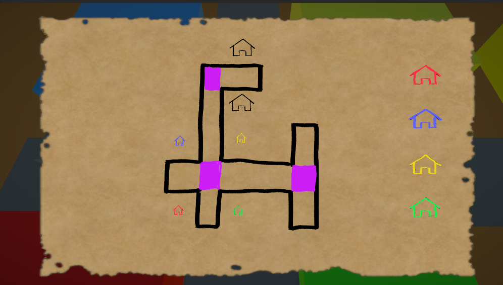
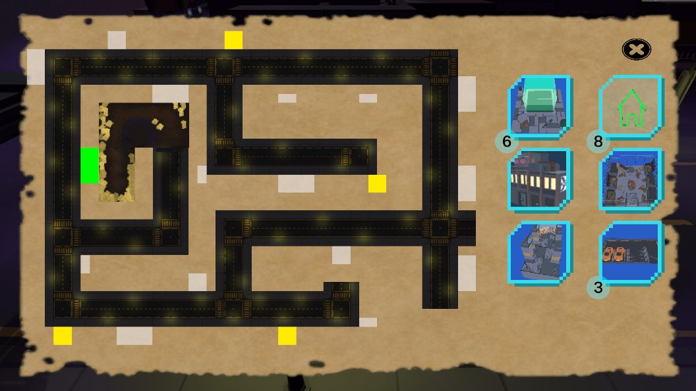
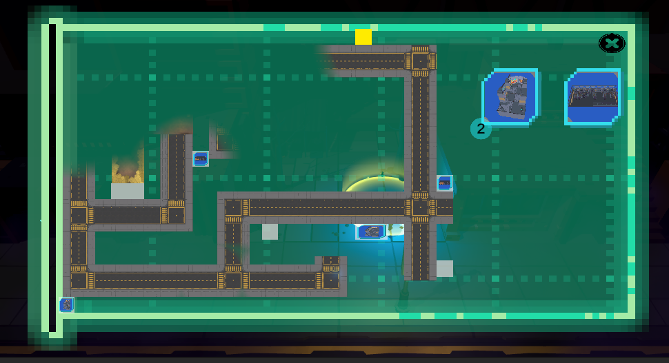
Shop Development

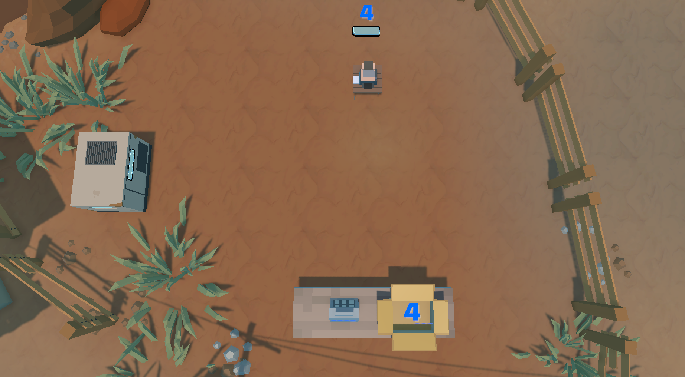